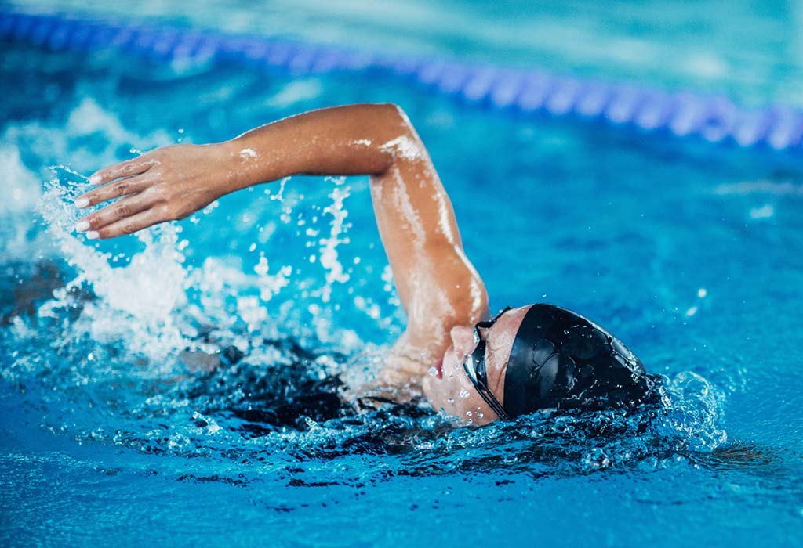
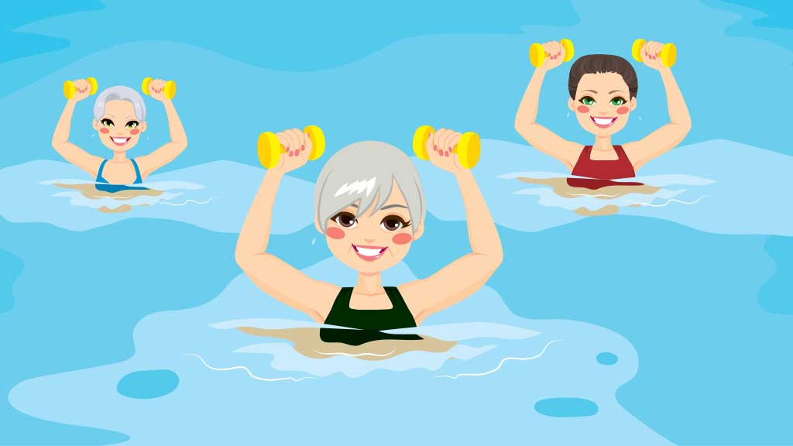
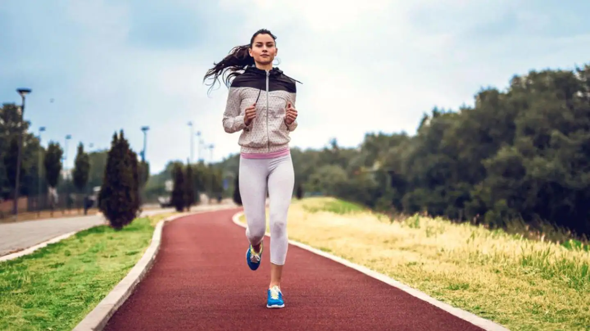

SWIMMING

Well as being fun, swimming is a great way to keep fit and make friends. Swimming is a healthy activity that you can continue for a lifetime. Swimming is a low-impact activity that has many physical and mental health benefits. Make sure you know how to swim and do so in a safe environment.Swimming is a great recreational activity for people of all ages. Recreational swimming can provide you with a low-impact workout and it's a good way to relax and feel good. Common swimming styles in recreational swimming are: breaststroke backstroke sidestroke freestyle. Clickhere
Well as being fun, swimming is a great way to keep fit and make friends. Swimming is a healthy activity that you can continue for a lifetime. Swimming is a low-impact activity that has many physical and mental health benefits. Make sure you know how to swim and do so in a safe environment.Swimming is a great recreational activity for people of all ages. Recreational swimming can provide you with a low-impact workout and it's a good way to relax and feel good. Common swimming styles in recreational swimming are: breaststroke backstroke sidestroke freestyle. Clickhere
WATER AEROBICS

The top benefits of aqua aerobics Water supports the body, putting less stress on your joints and muscles Working out in water helps build strength. Fighting against the push of the water activates your muscles Water pressure helps put less strain on the heart by moving blood around the body The impact of gravity is less in the water allowing a greater range of motion Working out in water helps prevent overheating, helping you exercise for longer And… it’s fun! It is not often you can say that about a workout.Aqua Aerobics classes are a great way to mix up a traditional gym workout with the wondrous benefits of water. It only takes a few aqua aerobics sessions and you’ll see a big difference in your overall fitness. Also know as water aerobics or sometimes waterobics, typical classes will involve all the exercises you would expect in a ‘dry’ class. But there are added bonuses when you exercise in water. Clickhere
The top benefits of aqua aerobics Water supports the body, putting less stress on your joints and muscles Working out in water helps build strength. Fighting against the push of the water activates your muscles Water pressure helps put less strain on the heart by moving blood around the body The impact of gravity is less in the water allowing a greater range of motion Working out in water helps prevent overheating, helping you exercise for longer And… it’s fun! It is not often you can say that about a workout.Aqua Aerobics classes are a great way to mix up a traditional gym workout with the wondrous benefits of water. It only takes a few aqua aerobics sessions and you’ll see a big difference in your overall fitness. Also know as water aerobics or sometimes waterobics, typical classes will involve all the exercises you would expect in a ‘dry’ class. But there are added bonuses when you exercise in water. Clickhere
JOGGING & RUNNING

Jogging is a form of trotting or running at a slow or leisurely pace. The main intention is to increase physical fitness with less stress on the body than from faster running but more than walking, or to maintain a steady speed for longer periods of time. Performed over long distances, it is a form of aerobic.While jogging on a treadmill will provide health benefits such as cancer prevention, and aid in weight loss, a study published in BMC Public Health reports that jogging outdoors can have the additional benefits of increased energy and concentration. Jogging outdoors is a better way to improve energy levels and advance mood than using a treadmill at the gym. Jogging also prevents muscle and bone damage that often occurs with age, improves heart performance and blood circulation and assists in preserving a balanced weight gain. Clickhere
Jogging is a form of trotting or running at a slow or leisurely pace. The main intention is to increase physical fitness with less stress on the body than from faster running but more than walking, or to maintain a steady speed for longer periods of time. Performed over long distances, it is a form of aerobic.While jogging on a treadmill will provide health benefits such as cancer prevention, and aid in weight loss, a study published in BMC Public Health reports that jogging outdoors can have the additional benefits of increased energy and concentration. Jogging outdoors is a better way to improve energy levels and advance mood than using a treadmill at the gym. Jogging also prevents muscle and bone damage that often occurs with age, improves heart performance and blood circulation and assists in preserving a balanced weight gain. Clickhere


Designed By Chandan.
Near Hebbal.
Box 155, Shivaji Nagar
Bangalore.